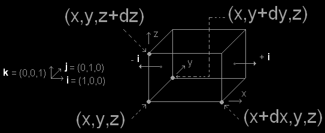
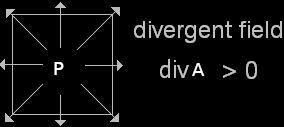
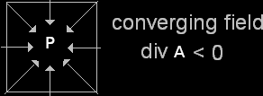
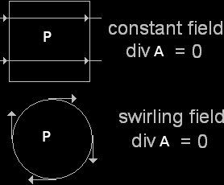

The Divergence
The divergence is the dot product of del and a vector field denoted by ∇ ⋅ A or div A. The symbol ∇ ⋅ F denotes the scalar product of the operator ∇ and the field F.
If A = A1 î + A2 ĵ + A3 ĵ, in Cartesian coordinates is
and, since î ⋅ î = ĵ ⋅ ĵ = k̂ ⋅ k̂ = 1; this is
Thus, the divergence of the vector field A is simply the change in its x-component along the x-axis plus the change in its y-component along the y-axis plus the change in its z-component along the z-axis. Note that the divergence of a vector field is a scalar quantity; it has magnitude but no direction.
Definition. The divergence of a vector field F: ℝn → ℝm differentiable on Ω ⊆ ℝn, is the scalar field
For example, if F = i F1(x,y,z) + j F2(x,y,z) + k F3(x,y,z) is a vector field of ℝ3
div F = ∂F1/∂x + ∂F2/∂y + ∂F3/∂z
thus div F is a scalar field, that is a real valued function of three variables.
Physical meaning
To illustrate what concretely represents the divergence of a vector field, A (x,y,z) = a1(x,y,z)i + a2(x,y,z)j + a3(x,y,z)k we consider an elementary volume space dV = dx dy dz.
We consider first the flux of the vector field through the the two elementary faces having normal parallel to i. The flux is the sum of A(x,y,z)dSi and −A(x+dx,y,z)dSi. Therefore those flows are equal to A1(x,y,z)dSi and −A1(x+dx,y,z)dSi with dS = dzdy. Thus
dΦ1 = [A1(x,y,z) − A1(x+dx,y,z)]dydz
dividing and multiplying by dx, yields
By the same reasoning on the sufaces dxdz and dxdy, we deduce that the sum of the flows of a on all faces of the elementary volume dV is
We deduce dΦ = (div A)dV with dV = dxdzdy and
The divergence is a measure of the outward flux of the vector field A per unit volume of an element at point P(x,y,x), that is a flux density.
A positive divergence at a point P(x,y,x) corresponds to a flow coming out of this point (diverging field - expansion fluid)
A negative divergence at a point P(x,y,x) corresponds to a flow coming in toward this point (converging field - fluid compression)
A divergence equal to 0 at a point P(x,y,x) corresponds to a flow coming out of this point that compensate a flow coming in toward this point (field uniform - incompressible fluid) or corresponds to a swirling field.

Divergence theorem
Teorema della Divergenza. Let Ω un dominio chiuso e limitato di ℝ3, il cui bordo ∂Ω è una superficie regolare parametrizzata, orientata con la normale uscente n. Sia F = F1 i + F2 j + F3 k, un campo vettoriale, regolare: F ∈ C1(Ω). Allora
Un'interpretazione di questo teorema, è quella di equazione di bilancio: la divergenza di un campo vettoriale è una misura dell'intensità delle sorgenti (o dei pozzo, a seconda del segno) del campo;
Per comprendere più a fondo il significato dell'operatore divergenza, applichiamo il teorema della div. ad una sfera Br di centro generico e raggio r e dividiamo ambo i membri per il volume della sfera (indicata con |Br|):
Facendo tendere a zero r. Il primo membro, per il teorema della media, tende al valore di divF nel centro della sfera. Si ha quindi:
il che significa che la divergenza di un campo è la densità di flusso del campo uscente dal punto per unità di volume.